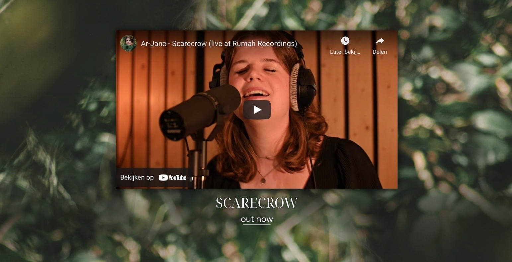

ar-jane website concept
Aanpak
Het hoofdproduct wat wij willen leveren aan onze opdrachtgever "Ar-Jane" is een vernieuwde en verbeterde website. De juiste eerste stap hiervoor was om websiteconcepten te designen, dus we gingen individueel websiteconcepten designen in Adobe XD om uiteindelijk al onze ideeën samen te voegen en 1 eindconcept te vormen. Ik wist dat ik me moest houden aan een rustige sfeer voor de website maar, ik wilde dat bereiken door middel van minimalisme in het design, dus dat is waar ik het meest op heb gefocust met dit design. Hieronder zie je het proces.
De voorpagina
Ik begon als eerst met het bewerken van de achtergrondfoto die ik wilde gebruiken voor de website in Photoshop. Ik had er wat color-correction op gedaan om het groene wat meer naar voren te brengen aangezien Ar-Jane aangaf dat ze vooral groen in haar kleurenpalet wilde. Dus uiteindelijk kwam ik met dit.
Na dat gedaan te hebben begon ik direct aan de voorpagina. Zoals ik al zei, wilde ik focussen op rust en minimalisme dus na de foto toegevoegd te hebben maakte ik een minimalistische navigatiebar. Geen overbodige flashy dingen of iets dergelijks, gewoon simpel en esthetisch en dat bereikte ik met het lettertype "Poppins" die hand-in-hand ging met het logo. Verder heb ik nog in de linker-bovenhoek en rechter-onderhoek wat vormen toegevoegd die Madelief zelf had ontworpen, ik zette hier een "Overlay" blending mode op en ik zorgde ervoor dat hij fixed bleef. Uiteindelijk zag het er zo uit.
Vervolgens ben ik terug gegaan naar Photoshop om een nieuwe achtergrond te maken die je zou zien na mate je naar beneden scrolled. Ik wilde dat de achtergrond waar Ar-Jane voor stond in de originele foto het enige was wat er te zien was. Lang verhaal kort, ik heb Ar-Jane uit de originele foto gehaald en de achtergrond als centraal punt gemaakt. Dit was het resultaat.

Na dit gedaan te hebben ging ik verder werken aan de inhoud van de eerste pagina. Wat Ar-Jane duidelijk maakte, is dat ze wilde dat haar nieuwste muziek makkelijk te vinden was op haar website, en buiten dat wilde ze ook een "newsletter" mogelijkheid zodat haar fans op de hoogte kunnen blijven met alles omtrent Ar-Jane en haar muziek. Als eerste wilde ik haar nieuwste YouTube video naar voren brengen op een minimalistische manier. Uiteindelijk kwam ik met dit.
Ten slotte voor de eerste pagina heb ik de aanmeldingsmogelijkheid voor de "Ar-Jane Newsletter" gemaakt. Wederom focuste ik op minimalisme en rust. Helemaal onderin had ik ook nog social media icons toegevoegd die dan zouden navigeren naar al haar platforms. Dit was het eindresultaat.
Nog een extra pagina die ik had ontworpen was een pagina waarop alle muziek van Ar-Jane makkelijk bereikbaar was. Ik had hierin haar Spotify, Apple Music, Soundcloud en YouTube profielen verwerkt. Alle muziek op 1 plek, dit was het eindresultaat.
Het eindresultaat
Hieronder kan je het eindresultaat bekijken van de website.
Feedback
Qua feedback heb ik van Ar-Jane zelf te horen gekregen dat mijn ontwerp haar favoriete was. Ze vond
de voorpagina er erg goed uitzien, de newsletter-mogelijkheid was ze ook erg tevreden mee en de 2e
pagina voor haar muziek vond ze ook heel goed en vooral bruikbaar voor haar website. Dus van Ar-Jane
was de feedback zeker positief.
Van mijn docent Evert kreeg ik ook feedback, wat hij te zeggen had
heb, ik in Feedpulse verwerkt, maar het ging als volgt: "Design is strak, de lijntjes in de hoeken met
de overlay blending mode is "heel vet". Navigatiebar is soms beetje onhandig omdat de content
eronder de navigatiebar onleesbaar maakt. Cool idee zou zijn om de content een parallax effect te
geven om dat op te lossen. Al met al positieve feedback.